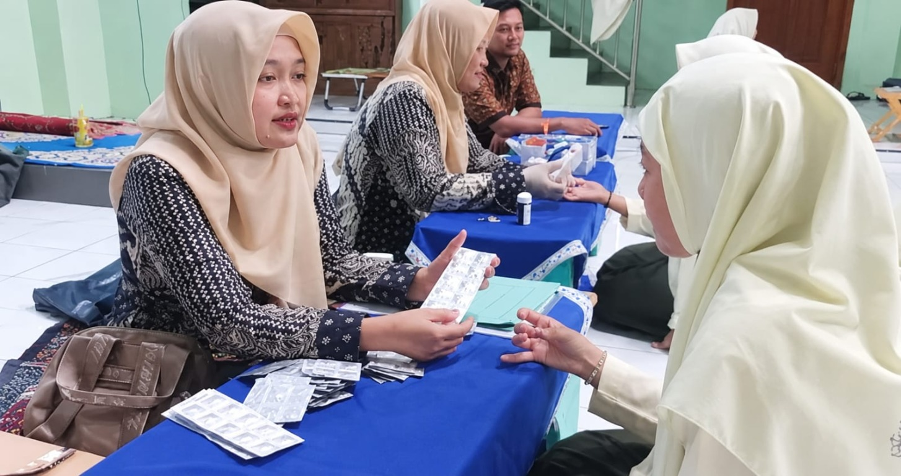

Perawat Penanggung Jawab
Yeni Vidia Irawati, Amd.Kep
Visit rutin, konsultasi kesehatan umum, dan evaluasi sanitasi.
Selasa & Kamis 14.00 - 17.00 WIB
الشِّفَاءُ وَالصِّحَّةُ فِي خِدْمَةِ الطَّلَبَةِ
Pusat pelayanan kesehatan resmi Pondok Pesantren Raudlatul Musthofa. Menyediakan penanganan medis dasar, konsultasi, pencegahan penyakit, serta edukasi pola hidup bersih dan sehat (PHBS) bagi seluruh santri dan pengurus.

Terwujudnya warga pondok pesantren yang sehat jasmani, rohani, dan mandiri melalui pelayanan kesehatan yang berlandaskan nilai-nilai Islami.
Kenali latar belakang Poskestren dan perkembangannya dalam mendukung kesehatan warga pondok pesantren.
Layanan pemeriksaan medis dasar, kesehatan gigi, dan konsultasi gizi bagi seluruh santri.
Periksa daftar poli dan unit layanan yang tersedia.
Lihat jadwal piket atau hubungi petugas untuk memastikan layanan.
Ikuti arahan petugas saat mendaftar dan menerima pelayanan.
Kenali peran petugas Poskestren dan waktu layanan piket.
Yeni Vidia Irawati, Amd.Kep
Visit rutin, konsultasi kesehatan umum, dan evaluasi sanitasi.
Selasa & Kamis 14.00 - 17.00 WIB
Jennei Jovita Ramdhani
Pemeriksaan medis harian dan perawatan luka.
Senin - Kamis 17.00 - 20.00 WIB
Pengurus Kesehatan Santri
Santri senior terlatih P3K yang bertugas piket bergantian.
24 Jam Standby
Bagikan pengalaman Anda mendapatkan pelayanan Poskestren.
Kartu berikut hanya simulasi untuk contoh tampilan, bukan ulasan nyata. Ulasan asli hanya ditampilkan setelah diverifikasi dan mendapat izin publikasi.
“Petugas Poskestren membantu dengan ramah dan memberikan arahan yang mudah dipahami.”
“Informasi layanan dan jadwal membantu saya mengetahui waktu yang tepat untuk datang.”
Isi data berikut untuk menyiapkan pendaftaran melalui WhatsApp petugas Poskestren.